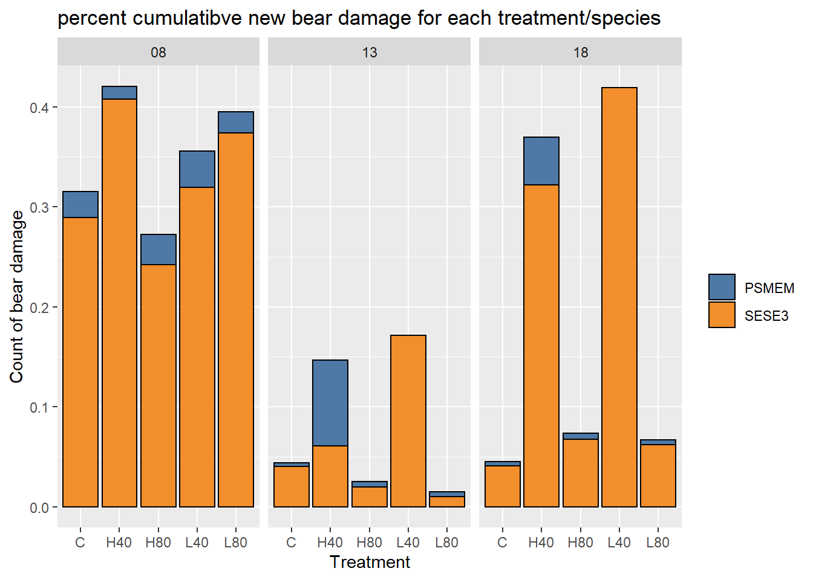
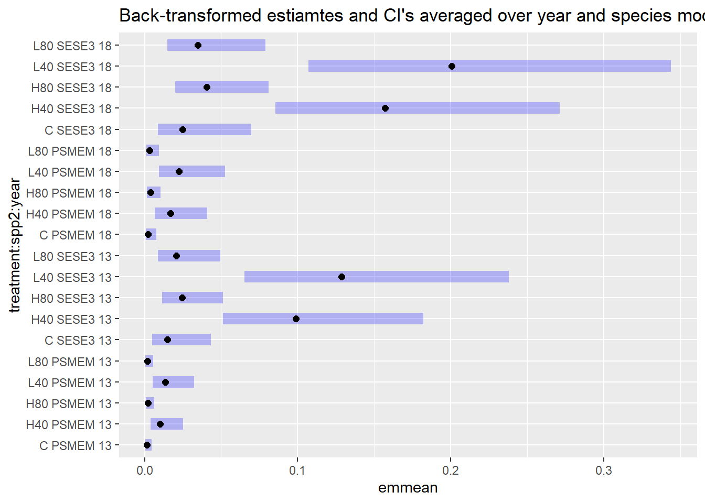

Bear and other damage
require(tidyverse)
library(performance)Bear damage
data cleaning
I’ll only consider live trees.
bd <- d_l %>%
filter(live) %>%
mutate(year = factor(year, ordered = FALSE)) %>%
select(-c(h_dist, azi, x, y, cc, live, ht))There are trees with “healed over” in the notes, most of these are in 2008. It makes sense if these trees are subsequently listed as not bear damaged.
I’m assuming that any tree that goes from bear damaged in 2008 to not bear damaged in 2013 is in fact healed and that any damage in 2018 is new damage.
# # Use this to look at any "healed" trees
# bd %>%
# group_by(tree_id) %>%
# filter(any(str_detect(tolower(notes), "healed"))) %>%
# color_groups()In looking at notes, trees trees that have “old bear damage” recorded are treated inconsistently, some are recorded with bear damage, some without. I’ll assume that trees recorded as not bear damaged are either undamaged or completely healed, and subsequent damage implies a new bear incidence of bear damage.
# # Use this to look at any "old bd" trees
# bd %>%
# group_by(tree_id) %>%
# filter(any(str_detect(tolower(notes), "old"))) %>%
# color_groups()Are there trees that are recorded as bear damaged in one period and then not in the next period? Put another way, are bear damaged trees dropped from the list for one reason or another?
There are 64 trees that are dropped (all in 2013), of these, 14 are subsequently listed as damaged (all in 2018). As stated above, I will consider these valid occurrences of new damage.
bear_dropped <- bd %>%
group_by(tree_id) %>%
mutate(bear_dropped = lag(bear) & !bear) %>%
filter(any(bear_dropped)) %>%
mutate(id = cur_group_id()) %>%
relocate(id) %>%
arrange(id)
# # all dropped bear damage trees occur in 2013
# filter(bear_dropped, bear_dropped) %>% pull(year) %>% unique()
# color_groups(bear_dropped)
# # trees that are re-attacked
# bear_dropped %>%
# filter(any(bear & !lag(bear))) %>%
# mutate(id = cur_group_id(), .before = 1) %>%
# color_groups()I need to create another variable which indicates if the damage is new for that period, when a trees goes from undamaged to damaged. I will also count trees as new bear damage when the damage increases from one period to the next ie. when condition code increases from 17 or 18 to 19 or 20.
# # this was used for ensuring all bear damage stuck with a tree throughout its life
# # I've since decided to allow trees to "completely heal," as the data seems to suggest this
# cum_logic <- function(x) {
# if (any(x)) {
# idx <- min(which(x))
# x[idx:length(x)] <- TRUE
# }
# return(x)
# }
bd <- bd %>%
group_by(tree_id) %>%
mutate(
bear_mag = as.numeric(get_cond(17, 18, 19, str = TRUE)),
bear_new = bear & year %in% c("init", "08") | bear & !lag(bear) | bear_mag > lag(bear_mag),
bear_new = if_else(is.na(bear_new), FALSE, bear_new)
) %>%
select(-bear_mag) %>%
ungroup()I’m going to drop alder and hemlock from the analysis, because they are never attacked by bear. I’m also going to group Douglas-fir and spruce together as “other”.
bd <- filter(bd, spp %in% c("SESE3", "PSMEM", "PISI")) %>%
mutate(spp2 = if_else(spp == "SESE3", spp, "OTHER"))Summary
Here is percent new bear damage over time. The H40 and L40 treatments seem to have the largest increases.
In the H40 treatment there is a decline in percent new bear damage in two plots, whereas for the L40 treatment, only one declines, and it is anomalous in that is the only plot that sees an increase from 2008 to 2013.
bear_plot <- function(data, var) {
my_dodge = position_dodge(width = 0.5)
ggplot(data, aes(year, {{var}}, color = treatment, group = treatment)) +
geom_line(position = my_dodge) +
geom_point(position = my_dodge) +
geom_errorbar(aes(ymin = {{var}} - se, ymax = {{var}} + se), width = 0.2, position = my_dodge)
}
bd %>%
# filter(year != "init") %>%
group_by(year, treatment, plot) %>%
summarize(pct_bear = sum(bear_new, na.rm = TRUE) / n()) %>%
summarize(avg_pct_bear = mean(pct_bear), se = sd(pct_bear) / sqrt(n()) ) %>%
bear_plot(avg_pct_bear) +
labs(title = "Average percent new bear damage for each treatment ±SE")
bd %>%
# filter(year != "init") %>%
group_by(year, treatment, plot) %>%
summarize(cnt_bear = sum(bear_new, na.rm = TRUE)) %>%
summarize( avg_cnt_bear = mean(cnt_bear), se = sd(cnt_bear) / sqrt(n()) ) %>%
bear_plot(avg_cnt_bear) +
labs(title = "Average count new bear damage for each treatment ±SE")
bd %>%
filter(year != "init") %>%
group_by(year, treatment, plot) %>%
summarize(pct_bear = sum(bear_new, na.rm = TRUE) / n()) %>%
# summarize(avg_pct_bear = mean(pct_bear)) %>%
ggplot(aes(year, pct_bear, color = treatment, group = plot)) +
geom_line(position = position_dodge(width = 0.4), size = 1, alpha = 0.6) +
facet_wrap(~ treatment) +
theme(legend.position = "none") +
geom_point(position = position_dodge(width = 0.4)) +
scale_x_discrete(expand = expansion(mult = 0.2)) +
labs(title = "Actual percent new bear damage for each treatment")bd %>%
filter(year != "init") %>%
group_by(treatment, year, plot) %>%
summarize(bear_new = sum(bear_new)) %>%
ungroup() %>%
ggplot(aes(str_extract(plot, "\\d"), bear_new, fill = year)) +
geom_col(position = "dodge", color = "black") +
facet_wrap(~ treatment) +
labs(
title = "Actual count new bear damage for each plot in treatment",
y = "Count of bear damage", x = "Plot number"
)bd %>%
filter(year != "init") %>%
group_by(treatment, year, spp2) %>%
summarize(bear_new = sum(bear_new)) %>%
ungroup() %>%
ggplot(aes(treatment, bear_new, fill = fct_relevel(spp2, "SESE3"))) +
geom_col(position = "stack", color = "black") +
facet_wrap(~ year) +
labs(
title = "Total sum of new bear damage for each treatment/species",
y = "Count of bear damage",
x = "Treatment",
fill = NULL
)
bd %>%
group_by(treatment, year, plot) %>%
summarize(bear_new = sum(bear_new)) %>%
ggplot(aes(year, bear_new, group = str_extract(plot, "\\d"))) +
geom_point(position = position_dodge(0.3), alpha = 0.5) +
geom_line(position = position_dodge(0.3), size = 1, alpha = 0.5) +
facet_wrap(~ treatment) +
labs(
title = "Actual count new bear damage for each plot in treatment",
y = "Count of bear damage", x = "Year"
)Modeling
There are several potential to modeling this data.
Probability of bear damage could be modeled as binary data with a generalized linear model binomial regression with logit link (logistic regression). This, I think would be answering: for a random (average?) tree from a given treatment, what is the probability that it would be bear damaged? I’m not sure we have sufficient observations of damaged trees characterize the distribution. In the case of prediction, we may need to make adjustment for the imbalance of response
Another approach is modeling percent bear damage at the plot level. Here linear regression may work, but theoretically, our response is bound by (0, 1). One recommendation here is Beta regression.
Also at the plot level, we could model counts using Poisson or negative binomial GLMM. This would answer the question: how many trees can we expect to be bear damaged given a treatment. Here it would probably be important to account for differences between treatments like diameter increment and tree size.
Logistic regression
We are modeling occurrence of new bear damage in 2013 and 2018. New bear damage in 2008 is not really comparable as it represents accumulated damage over an unspecified amount of time prior to treatment.
My first model is additive and includes treatment,
year, d_inc2, spp2 and random
slopes for plot, and tree_id.
bdmd <- subset(bd, year %in% c("13", "18"))
bm1 <- glmer(
bear_new ~ treatment + year + d_inc2 + spp2 + (1 | plot) + (1 | tree_id),
family = binomial,
data = bdmd
)
summary(bm1)## Generalized linear mixed model fit by maximum likelihood (Laplace Approximation) ['glmerMod']
## Family: binomial ( logit )
## Formula: bear_new ~ treatment + year + d_inc2 + spp2 + (1 | plot) + (1 | tree_id)
## Data: bdmd
##
## AIC BIC logLik deviance df.resid
## 511.0 569.2 -245.5 491.0 2485
##
## Scaled residuals:
## Min 1Q Median 3Q Max
## -0.9624 -0.1661 -0.0721 -0.0528 24.9678
##
## Random effects:
## Groups Name Variance Std.Dev.
## tree_id (Intercept) 1.729e-08 0.0001315
## plot (Intercept) 2.383e-02 0.1543790
## Number of obs: 2495, groups: tree_id, 1318; plot, 20
##
## Fixed effects:
## Estimate Std. Error z value Pr(>|z|)
## (Intercept) -6.5527 0.5888 -11.128 < 2e-16 ***
## treatmentH40 2.0192 0.5799 3.482 0.000497 ***
## treatmentH80 0.7222 0.5883 1.228 0.219621
## treatmentL40 2.2082 0.5895 3.746 0.000180 ***
## treatmentL80 0.5037 0.6304 0.799 0.424249
## year18 0.3485 0.2597 1.342 0.179713
## d_inc2 0.8155 0.2478 3.291 0.001000 ***
## spp2SESE3 2.0051 0.3252 6.166 6.99e-10 ***
## ---
## Signif. codes: 0 '***' 0.001 '**' 0.01 '*' 0.05 '.' 0.1 ' ' 1
##
## Correlation of Fixed Effects:
## (Intr) trtH40 trtH80 trtL40 trtL80 year18 d_inc2
## treatmntH40 -0.693
## treatmntH80 -0.706 0.788
## treatmntL40 -0.730 0.801 0.761
## treatmntL80 -0.679 0.724 0.709 0.706
## year18 -0.251 0.024 0.005 0.026 0.001
## d_inc2 -0.168 -0.233 -0.068 -0.173 -0.033 -0.053
## spp2SESE3 -0.369 -0.070 -0.087 0.027 -0.045 0.020 -0.089check allFit output
bm1.all <- allFit(bm1)## bobyqa : [OK]
## Nelder_Mead : [OK]
## nlminbwrap : [OK]
## nmkbw : [failed]
## optimx.L-BFGS-B : [OK]
## nloptwrap.NLOPT_LN_NELDERMEAD : [OK]
## nloptwrap.NLOPT_LN_BOBYQA : [OK]summary(bm1.all)## $which.OK
## bobyqa Nelder_Mead nlminbwrap nmkbw optimx.L-BFGS-B nloptwrap.NLOPT_LN_NELDERMEAD
## TRUE TRUE TRUE FALSE TRUE TRUE
## nloptwrap.NLOPT_LN_BOBYQA
## TRUE
##
## $msgs
## $msgs$bobyqa
## [1] "boundary (singular) fit: see help('isSingular')"
##
## $msgs$Nelder_Mead
## [1] "Model failed to converge with max|grad| = 0.00411575 (tol = 0.002, component 1)"
##
## $msgs$nlminbwrap
## [1] "boundary (singular) fit: see help('isSingular')"
##
## $msgs$`optimx.L-BFGS-B`
## [1] "boundary (singular) fit: see help('isSingular')"
##
## $msgs$nloptwrap.NLOPT_LN_NELDERMEAD
## [1] "Model failed to converge with max|grad| = 0.004486 (tol = 0.002, component 1)"
##
## $msgs$nloptwrap.NLOPT_LN_BOBYQA
## [1] "boundary (singular) fit: see help('isSingular')"
##
##
## $fixef
## (Intercept) treatmentH40 treatmentH80 treatmentL40 treatmentL80 year18 d_inc2 spp2SESE3
## bobyqa -6.552655 2.019177 0.7221943 2.208202 0.5036991 0.3484903 0.8155291 2.005079
## Nelder_Mead -6.552659 2.019241 0.7222265 2.208235 0.5038683 0.3485112 0.8155203 2.005038
## nlminbwrap -6.536237 2.021616 0.7207531 2.209154 0.5024763 0.3471309 0.8098878 2.001111
## optimx.L-BFGS-B -6.552820 2.019137 0.7221805 2.208211 0.5038025 0.3485291 0.8155745 2.005203
## nloptwrap.NLOPT_LN_NELDERMEAD -6.552724 2.019199 0.7222062 2.208253 0.5034650 0.3484457 0.8155400 2.005102
## nloptwrap.NLOPT_LN_BOBYQA -6.538346 2.016588 0.7218045 2.205725 0.5034200 0.3477317 0.8134501 2.002543
##
## $llik
## bobyqa Nelder_Mead nlminbwrap optimx.L-BFGS-B nloptwrap.NLOPT_LN_NELDERMEAD nloptwrap.NLOPT_LN_BOBYQA
## -245.5041 -245.5042 -245.5249 -245.5041 -245.5042 -245.5061
##
## $sdcor
## tree_id.(Intercept) plot.(Intercept)
## bobyqa 0.000000e+00 1.543678e-01
## Nelder_Mead 2.225543e-03 1.541786e-01
## nlminbwrap 0.000000e+00 2.567183e-06
## optimx.L-BFGS-B 0.000000e+00 1.544038e-01
## nloptwrap.NLOPT_LN_NELDERMEAD 2.398934e-03 1.541111e-01
## nloptwrap.NLOPT_LN_BOBYQA 6.565217e-08 1.470071e-01
##
## $theta
## tree_id.(Intercept) plot.(Intercept)
## bobyqa 0.000000e+00 1.543678e-01
## Nelder_Mead 2.225543e-03 1.541786e-01
## nlminbwrap 0.000000e+00 2.567183e-06
## optimx.L-BFGS-B 0.000000e+00 1.544038e-01
## nloptwrap.NLOPT_LN_NELDERMEAD 2.398934e-03 1.541111e-01
## nloptwrap.NLOPT_LN_BOBYQA 6.565217e-08 1.470071e-01
##
## $times
## user.self sys.self elapsed user.child sys.child
## bobyqa 1.61 0.00 1.61 NA NA
## Nelder_Mead 3.14 0.00 3.14 NA NA
## nlminbwrap 0.61 0.00 0.61 NA NA
## optimx.L-BFGS-B 3.40 0.01 3.42 NA NA
## nloptwrap.NLOPT_LN_NELDERMEAD 4.64 0.00 4.65 NA NA
## nloptwrap.NLOPT_LN_BOBYQA 0.73 0.00 0.73 NA NA
##
## $feval
## bobyqa Nelder_Mead nlminbwrap optimx.L-BFGS-B nloptwrap.NLOPT_LN_NELDERMEAD nloptwrap.NLOPT_LN_BOBYQA
## 357 1073 NA 36 1715 24
##
## attr(,"class")
## [1] "summary.allFit"For model 2, I’ll remove tree_id and see if the warnings
go away. They do, but the model is different.
bm2 <- glmer(bear_new ~ treatment + year + d_inc2 + spp2 + (1 | plot), family = binomial, data = bdmd)
summary(bm2)## Generalized linear mixed model fit by maximum likelihood (Laplace Approximation) ['glmerMod']
## Family: binomial ( logit )
## Formula: bear_new ~ treatment + year + d_inc2 + spp2 + (1 | plot)
## Data: bdmd
##
## AIC BIC logLik deviance df.resid
## 509.0 561.4 -245.5 491.0 2486
##
## Scaled residuals:
## Min 1Q Median 3Q Max
## -0.9624 -0.1661 -0.0721 -0.0528 24.9674
##
## Random effects:
## Groups Name Variance Std.Dev.
## plot (Intercept) 0.02384 0.1544
## Number of obs: 2495, groups: plot, 20
##
## Fixed effects:
## Estimate Std. Error z value Pr(>|z|)
## (Intercept) -6.5527 0.5888 -11.130 < 2e-16 ***
## treatmentH40 2.0192 0.5798 3.482 0.000497 ***
## treatmentH80 0.7222 0.5883 1.228 0.219588
## treatmentL40 2.2082 0.5895 3.746 0.000180 ***
## treatmentL80 0.5037 0.6304 0.799 0.424271
## year18 0.3485 0.2597 1.342 0.179713
## d_inc2 0.8155 0.2478 3.291 0.001000 ***
## spp2SESE3 2.0051 0.3252 6.167 6.98e-10 ***
## ---
## Signif. codes: 0 '***' 0.001 '**' 0.01 '*' 0.05 '.' 0.1 ' ' 1
##
## Correlation of Fixed Effects:
## (Intr) trtH40 trtH80 trtL40 trtL80 year18 d_inc2
## treatmntH40 -0.693
## treatmntH80 -0.706 0.788
## treatmntL40 -0.730 0.801 0.761
## treatmntL80 -0.679 0.724 0.709 0.706
## year18 -0.251 0.024 0.005 0.026 0.001
## d_inc2 -0.168 -0.233 -0.068 -0.173 -0.033 -0.053
## spp2SESE3 -0.369 -0.070 -0.087 0.027 -0.045 0.020 -0.089Having a look at the initial model. Including tree_id as
a random effect doesn’t seem to contribute anything to the model, so I
look at the model with plot only.
compare_performance(bm1, bm2)## # Comparison of Model Performance Indices
##
## Name | Model | AIC | AIC weights | BIC | BIC weights | R2 (cond.) | R2 (marg.) | ICC | RMSE | Sigma | Log_loss | Score_log | Score_spherical
## ----------------------------------------------------------------------------------------------------------------------------------------------------------
## bm1 | glmerMod | 511.008 | 0.269 | 569.229 | 0.020 | 0.391 | 0.386 | 0.007 | 0.155 | 1.000 | 0.098 | -1.987 | 0.017
## bm2 | glmerMod | 509.008 | 0.731 | 561.407 | 0.980 | 0.391 | 0.386 | 0.007 | 0.155 | 1.000 | 0.098 | -1.987 | 0.017b2_mean <- emmeans(bm2, ~ treatment, type = "response")
plot(b2_mean)
emmeans(bm2, pairwise ~ spp2, type = "response")## $emmeans
## spp2 prob SE df asymp.LCL asymp.UCL
## OTHER 0.0073 0.00220 Inf 0.00404 0.0132
## SESE3 0.0518 0.00961 Inf 0.03587 0.0742
##
## Results are averaged over the levels of: treatment, year
## Confidence level used: 0.95
## Intervals are back-transformed from the logit scale
##
## $contrasts
## contrast odds.ratio SE df null z.ratio p.value
## OTHER / SESE3 0.135 0.0438 Inf 1 -6.167 <.0001
##
## Results are averaged over the levels of: treatment, year
## Tests are performed on the log odds ratio scalepairs(b2_mean)## contrast odds.ratio SE df null z.ratio p.value
## C / H40 0.133 0.0770 Inf 1 -3.482 0.0045
## C / H80 0.486 0.2857 Inf 1 -1.228 0.7352
## C / L40 0.110 0.0648 Inf 1 -3.746 0.0017
## C / L80 0.604 0.3809 Inf 1 -0.799 0.9310
## H40 / H80 3.658 1.3929 Inf 1 3.406 0.0059
## H40 / L40 0.828 0.3053 Inf 1 -0.513 0.9862
## H40 / L80 4.552 2.0560 Inf 1 3.355 0.0071
## H80 / L40 0.226 0.0921 Inf 1 -3.653 0.0024
## H80 / L80 1.244 0.5806 Inf 1 0.468 0.9902
## L40 / L80 5.499 2.5813 Inf 1 3.631 0.0026
##
## Results are averaged over the levels of: year, spp2
## P value adjustment: tukey method for comparing a family of 5 estimates
## Tests are performed on the log odds ratio scalepwpp(b2_mean)emmip(bm2, treatment ~ d_inc2, at = list(d_inc2 = seq(-0.5, 2.8, 0.1)), type = "response")b2_mean %>% multcomp::cld(reversed = TRUE)## treatment prob SE df asymp.LCL asymp.UCL .group
## L40 0.05771 0.01664 Inf 0.03253 0.1004 1
## H40 0.04825 0.01379 Inf 0.02738 0.0837 1
## H80 0.01367 0.00425 Inf 0.00741 0.0251 2
## L80 0.01102 0.00418 Inf 0.00523 0.0231 2
## C 0.00669 0.00343 Inf 0.00244 0.0182 2
##
## Results are averaged over the levels of: year, spp2
## Confidence level used: 0.95
## Intervals are back-transformed from the logit scale
## P value adjustment: tukey method for comparing a family of 5 estimates
## Tests are performed on the log odds ratio scale
## significance level used: alpha = 0.05
## NOTE: Compact letter displays can be misleading
## because they show NON-findings rather than findings.
## Consider using 'pairs()', 'pwpp()', or 'pwpm()' instead.This model seems to be working. Now I’ll do more model selection, testing for interactions.
Model validation
I can check for over dispersion, and I don’t think I need to worry about underdispersion
compare_performance(bm1, bm2)## # Comparison of Model Performance Indices
##
## Name | Model | AIC | AIC weights | BIC | BIC weights | R2 (cond.) | R2 (marg.) | ICC | RMSE | Sigma | Log_loss | Score_log | Score_spherical
## ----------------------------------------------------------------------------------------------------------------------------------------------------------
## bm1 | glmerMod | 511.008 | 0.269 | 569.229 | 0.020 | 0.391 | 0.386 | 0.007 | 0.155 | 1.000 | 0.098 | -1.987 | 0.017
## bm2 | glmerMod | 509.008 | 0.731 | 561.407 | 0.980 | 0.391 | 0.386 | 0.007 | 0.155 | 1.000 | 0.098 | -1.987 | 0.017